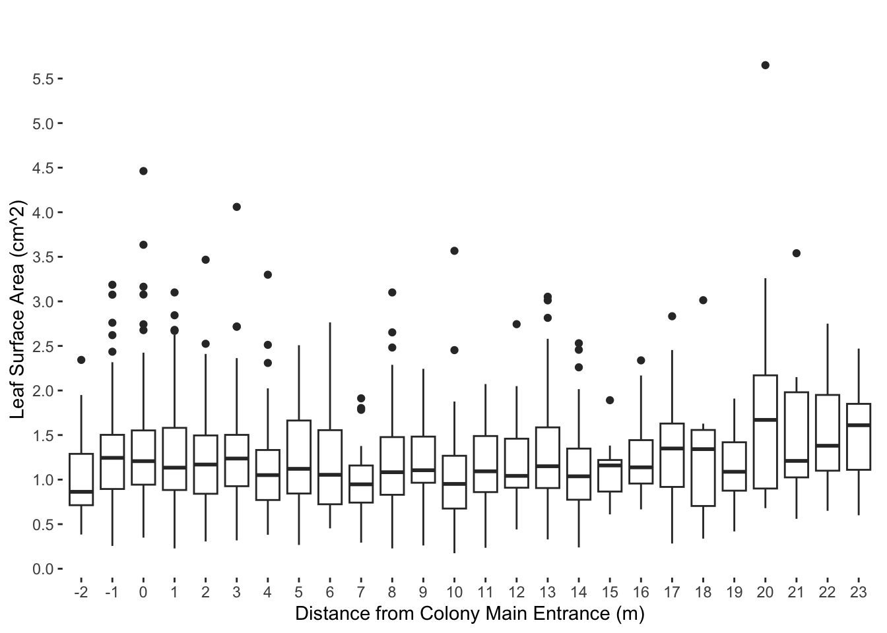
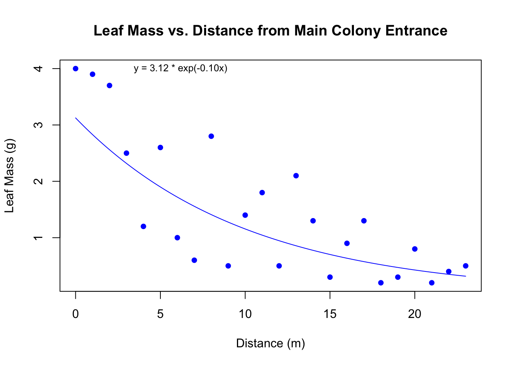
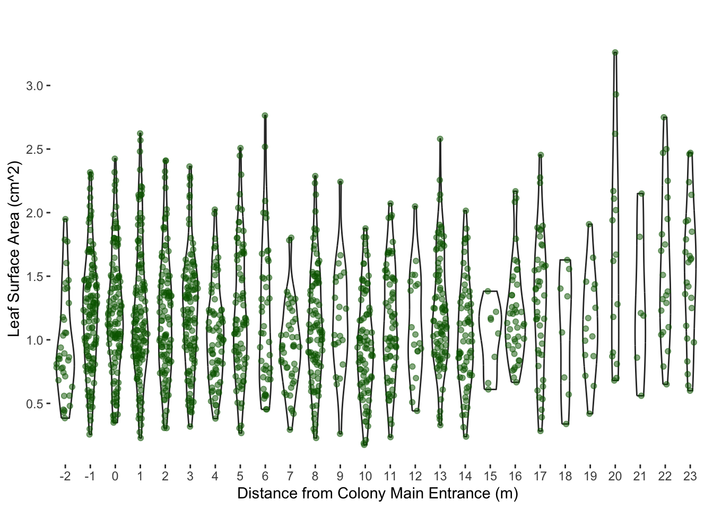

df <- read_excel("~/Desktop/Spring 2024/Field Ecology Lab/Leafcutters Jan 2024/Excel Sheets/No statistics.xlsx")Leaf_Analysis
Context
From January 1-15, 2024, I visited Costa Rica as a class trip. I conducted an observational study on foraging behavior of leafcutter ants. My goal is to assess qualities of leaves that are rejected far from the colony, vs. leaves that are carried all the way to the colony entrance and rejected at the doorstep.
Packages
- tidyverse
- readxl
- ggplot2
- dplyr
- agricolae
Leaf Area vs. Distance Analysis
Make dataframe from excel
Tidy, remove NA, and order
df_long <- tidyr::gather(df, key = "Distance", value = "Area")
df_long$Distance <- as.character(df_long$Distance)
df_long_nona <- df_long[complete.cases(df_long$Area), ]
df_long_nona$Distance <- as.character(df_long_nona$Distance)
df_long_nona$Distance <- factor(df_long_nona$Distance, levels = unique(df_long_nona$Distance))Make a box-and-whisker plot
ggplot(df_long_nona, aes(x = Distance, y = Area)) +
geom_boxplot() +
labs(title = "",
x = "Distance from Colony Main Entrance (m)",
y = "Leaf Surface Area (cm^2)") +
theme(panel.background = element_rect(fill = "white"),
panel.grid = element_line(color = "gray95"),
panel.grid.major.x = element_line(color = "white"))+
scale_y_continuous(breaks = seq(0, max(df_long_nona$Area), by = 0.5))
Make a bar chart
# Calculate means and standard errors using dplyr
summary_data <- df_long_nona %>%
group_by(Distance) %>%
summarize(Mean = mean(Area, na.rm = TRUE),
SE = sd(Area, na.rm = TRUE) / sqrt(sum(!is.na(Area))))
ggplot(summary_data, aes(x = Distance, y = Mean, fill = factor(Distance))) +
geom_bar(stat = "identity", position = "dodge", fill = ifelse(summary_data$Distance == "0", "firebrick3", "darkslategray4")) +
geom_errorbar(aes(ymin = Mean - SE, ymax = Mean + SE), position = position_dodge(width = 0.8), width = 0.25) +
labs(title = "",
x = "Distance from Colony Main Entrance (m)",
y = "Leaf Surface Area (cm^2)") +
theme(legend.position = "none")
Leaf area statistics
model <- aov(Area ~ Distance, data = df_long_nona)
summary(model) Df Sum Sq Mean Sq F value Pr(>F)
Distance 25 28.9 1.1565 3.497 1.45e-08 ***
Residuals 1527 505.0 0.3307
---
Signif. codes: 0 '***' 0.001 '**' 0.01 '*' 0.05 '.' 0.1 ' ' 1tukey_results <- HSD.test(model, "Distance")
print(tukey_results)$statistics
MSerror Df Mean CV
0.3307066 1527 1.228622 46.80618
$parameters
test name.t ntr StudentizedRange alpha
Tukey Distance 26 5.210716 0.05
$means
Area std r se Min Max Q25 Q50 Q75
-1 1.2685682 0.5440600 132 0.05005350 0.256 3.186 0.89475 1.2440 1.50225
-2 1.0075946 0.4666685 37 0.09454109 0.384 2.343 0.71300 0.8630 1.28900
0 1.3095806 0.6564874 124 0.05164290 0.349 4.462 0.94325 1.2070 1.55200
1 1.3194667 0.7202769 135 0.04949423 0.228 5.486 0.88400 1.1340 1.59450
10 1.0106136 0.5150416 88 0.06130277 0.174 3.567 0.67525 0.9515 1.26750
11 1.1398406 0.4386382 69 0.06923041 0.235 2.072 0.86000 1.0930 1.48900
12 1.1920952 0.5417438 21 0.12549077 0.441 2.744 0.90900 1.0420 1.45900
13 1.2853053 0.5317337 95 0.05900104 0.329 3.052 0.90550 1.1500 1.58600
14 1.1091429 0.4891396 70 0.06873413 0.239 2.530 0.77425 1.0370 1.34800
15 1.1121111 0.3901543 9 0.19169032 0.610 1.891 0.86600 1.1590 1.22000
16 1.2313409 0.4054133 44 0.08669521 0.666 2.338 0.95600 1.1375 1.44300
17 1.3291778 0.5662934 45 0.08572652 0.283 2.833 0.91800 1.3490 1.62900
18 1.2903333 0.7899096 9 0.19169032 0.338 3.013 0.70400 1.3420 1.55700
19 1.1270667 0.4003059 15 0.14848269 0.419 1.909 0.87600 1.0880 1.41900
2 1.2437477 0.5679338 107 0.05559421 0.306 3.467 0.84200 1.1770 1.50250
20 1.9068824 1.2455106 17 0.13947520 0.679 5.648 0.90200 1.6720 2.17400
21 1.6161429 1.0046484 7 0.21735640 0.555 3.538 1.02550 1.2100 1.97950
22 1.5696190 0.5950433 21 0.12549077 0.650 2.747 1.09900 1.3830 1.95400
23 1.5100400 0.5362901 25 0.11501419 0.599 2.473 1.10800 1.6120 1.85200
3 1.2631379 0.5508285 116 0.05339400 0.318 4.060 0.92625 1.2365 1.50200
4 1.1206974 0.5026705 76 0.06596516 0.381 3.299 0.77125 1.0505 1.33225
5 1.2599390 0.6813044 82 0.06350597 0.267 5.320 0.84500 1.1240 1.66900
6 1.1871860 0.5744438 43 0.08769750 0.453 2.764 0.72350 1.0540 1.55500
7 0.9659348 0.3553319 46 0.08478959 0.293 1.912 0.74200 0.9470 1.15825
8 1.1664694 0.5291474 98 0.05809094 0.228 3.100 0.82975 1.0830 1.47700
9 1.1631364 0.4310594 22 0.12260554 0.261 2.243 0.96475 1.1050 1.48250
$comparison
NULL
$groups
Area groups
20 1.9068824 a
21 1.6161429 ab
22 1.5696190 ab
23 1.5100400 ab
17 1.3291778 ab
1 1.3194667 b
0 1.3095806 b
18 1.2903333 b
13 1.2853053 b
-1 1.2685682 b
3 1.2631379 b
5 1.2599390 b
2 1.2437477 b
16 1.2313409 b
12 1.1920952 b
6 1.1871860 b
8 1.1664694 b
9 1.1631364 b
11 1.1398406 b
19 1.1270667 b
4 1.1206974 b
15 1.1121111 b
14 1.1091429 b
10 1.0106136 b
-2 1.0075946 b
7 0.9659348 b
attr(,"class")
[1] "group"Leaf Mass and Count Analysis
Create a Dataframe
# Extract the means from the summary_data dataframe
area_vector <- summary_data$Mean
distance_vector <- summary_data$Distance
#Extract mass and count from excel
mass_count_excel_file_path <- "~/Desktop/Spring 2024/Field Ecology Lab/Leafcutters Jan 2024/Excel Sheets/Area Data.xlsx"leaf_count_row <- df_2[2, ]
count_vector <- as.vector(unlist(leaf_count_row))
count_vector <- count_vector[count_vector != "count"]
count_vector <- count_vector[count_vector != "1553"]
count_vector <- as.numeric(count_vector)
leaf_mass_row <- df_2[1, ]
mass_vector <- as.vector(unlist(leaf_mass_row))
mass_vector <- mass_vector[mass_vector != "mass"]
mass_vector <- mass_vector[mass_vector != "39.5"]
mass_vector <- as.numeric(mass_vector)
mass_per_leaf <- mass_vector / count_vector
mass_per_area <- mass_vector / area_vector / count_vector
quadrat_data <- data.frame(
Distance = distance_vector,
Area = area_vector,
Mass = mass_vector,
Count = count_vector,
MpreL = mass_per_leaf,
MperA = mass_per_area
)
#change row headers
colnames(quadrat_data) <-
c("Distance (m)", "Avg Area (cm²)", "Mass (g)", "Count","g/leaf", "g/cm²")
print(quadrat_data, row.names = FALSE) Distance (m) Avg Area (cm²) Mass (g) Count g/leaf g/cm²
-2 1.0075946 0.7 37 0.01891892 0.01877632
-1 1.2685682 4.0 132 0.03030303 0.02388759
0 1.3095806 4.0 124 0.03225806 0.02463236
1 1.3194667 3.9 135 0.02888889 0.02189437
2 1.2437477 3.7 107 0.03457944 0.02780262
3 1.2631379 2.5 116 0.02155172 0.01706205
4 1.1206974 1.2 76 0.01578947 0.01408897
5 1.2599390 2.6 82 0.03170732 0.02516576
6 1.1871860 1.0 43 0.02325581 0.01958902
7 0.9659348 0.6 46 0.01304348 0.01350348
8 1.1664694 2.8 98 0.02857143 0.02449394
9 1.1631364 0.5 22 0.02272727 0.01953965
10 1.0106136 1.4 88 0.01590909 0.01574201
11 1.1398406 1.8 69 0.02608696 0.02288650
12 1.1920952 0.5 21 0.02380952 0.01997284
13 1.2853053 2.1 95 0.02210526 0.01719845
14 1.1091429 1.3 70 0.01857143 0.01674395
15 1.1121111 0.3 9 0.03333333 0.02997302
16 1.2313409 0.9 44 0.02045455 0.01661160
17 1.3291778 1.3 45 0.02888889 0.02173441
18 1.2903333 0.2 9 0.02222222 0.01722208
19 1.1270667 0.3 15 0.02000000 0.01774518
20 1.9068824 0.8 17 0.04705882 0.02467841
21 1.6161429 0.2 7 0.02857143 0.01767878
22 1.5696190 0.4 21 0.01904762 0.01213519
23 1.5100400 0.5 25 0.02000000 0.01324468Plot Leaf Mass vs. Distance
#establish data
x <- 0:23
y <- mass_vector[-(1:2)]
z <- count_vector[-(1:2)]
plot(x, y, main = "Leaf Mass vs. Distance from Main Colony Entrance", xlab = "Distance (m)", ylab = "Leaf Mass (g)", col = "blue", pch = 16)
#Add an exponential line of best fit
fit <- lm(log(y) ~ x)
# Generate predicted values for the exponential fit
x_pred <- seq(min(x), max(x), length.out = 100)
y_pred <- exp(predict(fit, newdata = data.frame(x = x_pred)))
# Add the exponential line to the plot
lines(x_pred, y_pred, col = "blue", type = "l")
#add the equation of best fit
# Extract coefficients and transform back from log scale
a <- exp(coef(fit)[1])
b <- coef(fit)[2]
# Print the equation on the plot
eq <- sprintf("y = %.2f * exp(%.2fx)", a, b)
text(3, max(y), eq, pos = 4, col = "black", cex = 0.8)
Plot Leaf Count vs. Distance
plot(x, z, main = "Leaf Count vs. Distance from Main Colony Entrance", xlab = "Distance (m)", ylab = "Leaf Count", col = "firebrick2", pch = 16)
fit <- lm(log(z) ~ x)
x_pred <- seq(min(x), max(x), length.out = 100)
z_pred <- exp(predict(fit, newdata = data.frame(x = x_pred)))
lines(x_pred, z_pred, col = "firebrick2", type = "l")
a <- exp(coef(fit)[1])
b <- coef(fit)[2]
eq <- sprintf("z = %.2f * exp(%.2fx)", a, b)
text(3, max(z), eq, pos = 4, col = "black", cex = 0.8)
Plot both Leaf Count and Mass vs. Distance on the same graph
# Set up the first plotting region
# Set up the plotting region
par(mar = c(5, 4, 4, 2) + 0.1, oma = c(0, 0, 0, 1))
plot(x, y, type = "p", col = "blue", pch = 16, ylab = "", xlab = "Distance (m)", axes = TRUE)
# Add a label on the left side for Y
mtext("Mass (g)", side = 2, line = 2, col = "blue", cex = 1.2) # Adjust line and cex as needed
#Add an exponential line of best fit
fit <- lm(log(y) ~ x)
# Generate predicted values for the exponential fit
x_pred <- seq(min(x), max(x), length.out = 100)
y_pred <- exp(predict(fit, newdata = data.frame(x = x_pred)))
# Add the exponential line to the plot
lines(x_pred, y_pred, col = "blue", type = "l")
# Overlay the second set of points
par(new = TRUE)
plot(x, z, type = "p", col = "firebrick2", pch = 16, ylab = "", xlab = "", axes = FALSE)
#Add line of best fit
fit <- lm(log(z) ~ x)
x_pred <- seq(min(x), max(x), length.out = 100)
z_pred <- exp(predict(fit, newdata = data.frame(x = x_pred)))
lines(x_pred, z_pred, col = "firebrick2", type = "l")
# Add a label on the right side for Z
mtext("Count", side = 4, line = 2, col = "firebrick2", cex = 1.2) # Adjust line and cex as needed
# Add a y-axis on the right side for Z
axis(4, col = "black", col.axis = "black", las = 1) # Set color for Z axis
# Add a legend
legend("topright", legend = c("Mass (g)", "Count"), col = c("blue", "firebrick2"), pch = 16)